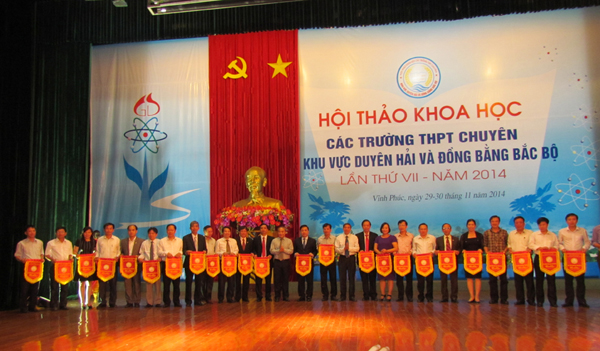
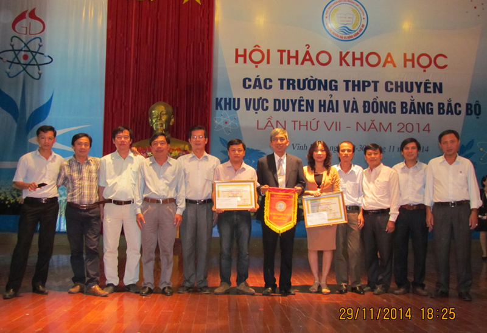
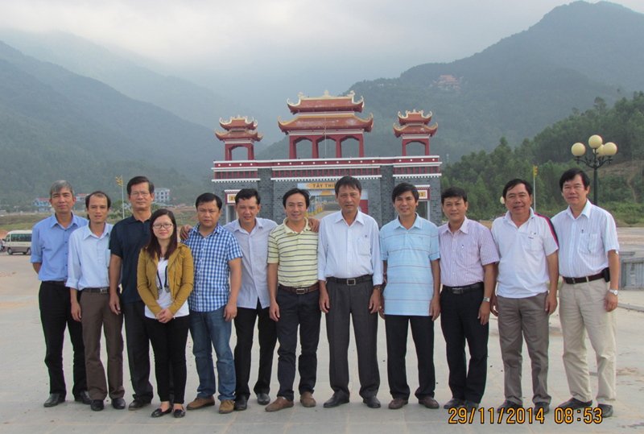

Từ chuyến đi Hội thảo Vĩnh Phúc

Lần cập nhật cuối lúc Thứ bảy, 07 Tháng 2 2015 14:48 Viết bởi Administrator Thứ tư, 10 Tháng 12 2014 00:00
Thực hiện nhiệm vụ năm học, cuối tháng 11 đầu tháng 12 vừa qua, Ban Giám hiệu nhà trường đã thành lập Đoàn cán bộ, giáo viên tham gia Hội thảo khoa học trường chuyên các tỉnh duyên hải đồng bằng Bắc bộ tổ chức tại Vĩnh Phúc. Đoàn gồm thầy cô trong Ban Giám hiệu, các tổ trưởng chuyên môn và thầy cô đại diện tổ.

Thứ trưởng Nguyễn Vinh Hiển trao cờ lưu niệm cho hiệu trưởng các trường THPT chuyên khu vực Duyên hải và Đồng bằng Bắc Bộ

Trên đường đến Vĩnh Phúc, Đoàn đã dừng lại ở Thanh Hóa theo lời mời của trường THPT chuyên Lam Sơn để giao lưu sinh hoạt. Buổi giao lưu vừa củng cố niềm tin sâu sắc của trường ta về những định hướng lớn nhằm nâng cao chất lượng dạy và học mà chúng ta đang thực hiện, đồng thời cũng đặt ra nhiều hướng tiếp cận mới về một số lĩnh vực tưởng chừng đã cũ như cách tuyển sinh, cách chọn giáo viên bồi dưỡng đội tuyển dự thi quốc gia, cách tổ chức dạy thi đại học trong trường chuyên,...
Buổi Hội thảo khoa học ở Vĩnh Phúc lại là một cơ hội khác để Đoàn được đối thoại với các trường chuyên của bạn về nhiều vấn đề chuyên môn, được phát biểu và chia sẻ những báo cáo khoa học đạt giải cao với nhiều thông tin liên quan đến nội dung dạy bồi dưỡng. Chúng ta học tập từ Hội thảo cách định hướng nội dung các chuyên đề và cách tổ chức thẩm định khách quan, khoa học. Tại Hội thảo, Đoàn Nguyễn Bỉnh Khiêm đã được nhận 03 chứng nhận khen thưởng: giải nhì chuyên đề môn Toán của thầy giáo Võ Tiến, giải ba chuyên đề của cô giáo Nguyễn Thị Bích Hiền tổ Ngữ văn và giải ba về việc ra đề đề xuất của tổ Ngoại ngữ. Chuyến đi càng có ý nghĩa hơn khi Đoàn Hội thảo trường ta đã đến dâng hương tại Đền Hùng trong tâm thế hướng về nguồn cội, viếng mộ Đại tướng Võ Nguyên Giáp để tưởng nhớ một vị tướng sống mãi trong lòng nhân dân Việt Nam, ghé thăm để có thêm những trải nghiệm ở Tam Đảo, Tây Thiên,...

Không phải những gì diễn ra từ Hội thảo và các sinh hoạt giao lưu cùng trường chuyên của bạn đều suôn sẻ, thuận lợi - chưa kể đến việc tất cả mọi người trong Đoàn đều phải ngồi xe hơn bốn ngày trên tổng số bảy ngày của chuyến đi. Nhưng rõ ràng đó là một trong những chuyến đi cần thiết, bổ ích và thú vị.
Trên đường về, trời chuyển lạnh nhưng cả Đoàn nóng rực một suy nghĩ: cần phải tổ chức những chuyến đi như vậy cho nhiều hơn nữa những thầy cô giáo của trường ta.
TRIỆU PHONG
- 29/08/2015 08:55 - Thầy và trò trường THPT chuyên Nguyễn Bỉnh Khiêm c…
- 31/07/2015 09:22 - Hướng dẫn làm hồ sơ xét tuyển Đại học - Cao đẳng 2…
- 29/04/2015 16:09 - Đội tuyển HSG môn lịch sử Quảng Nam đạt tỉ lệ giải…
- 01/04/2015 19:46 - Hướng dẫn tổ chức thi THPT quốc gia và xét công n…
- 05/02/2015 13:54 - Kết quả kỳ thi chọn học sinh giỏi quốc gia lớp 12 …
- 13/11/2014 07:42 - Trường THPT chuyên Nguyễn Bỉnh Khiêm - Quảng Nam t…
- 30/10/2014 10:32 - Đại hội Đoàn trường THPT chuyên Nguyễn Bỉnh Khiêm …
- 05/09/2014 00:00 - Trường THPT chuyên Nguyễn Bỉnh Khiêm tổ chức lễ kh…
- 15/03/2014 08:05 - Kết quả chung kết hùng biện Tiếng Anh tại trường T…
- 24/01/2014 11:42 - Kết quả kỳ thi học sinh giỏi quốc gia năm học 2014